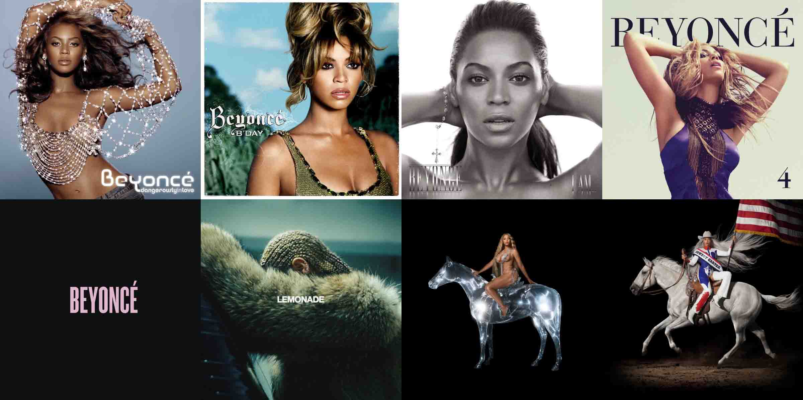
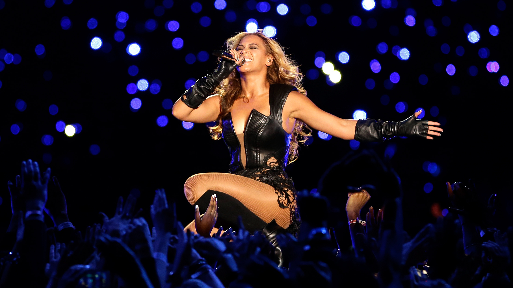
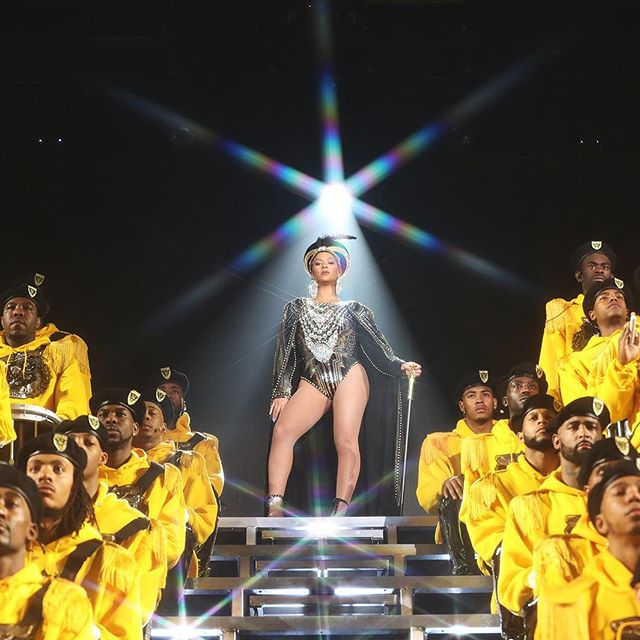
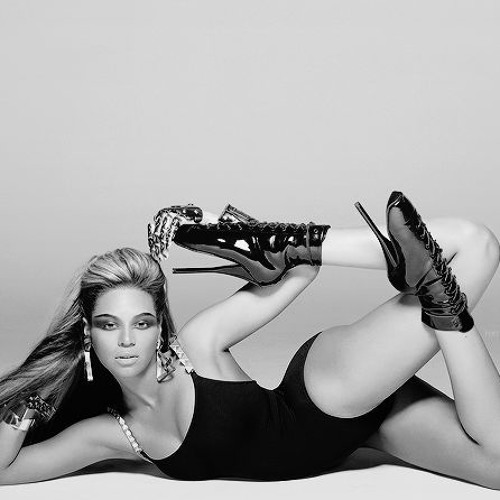
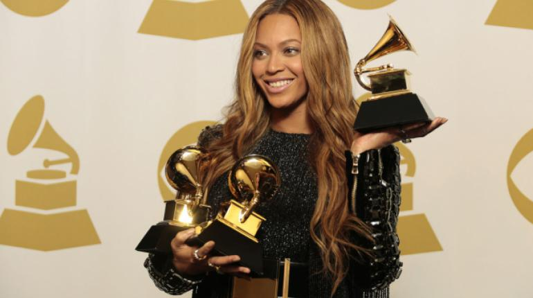
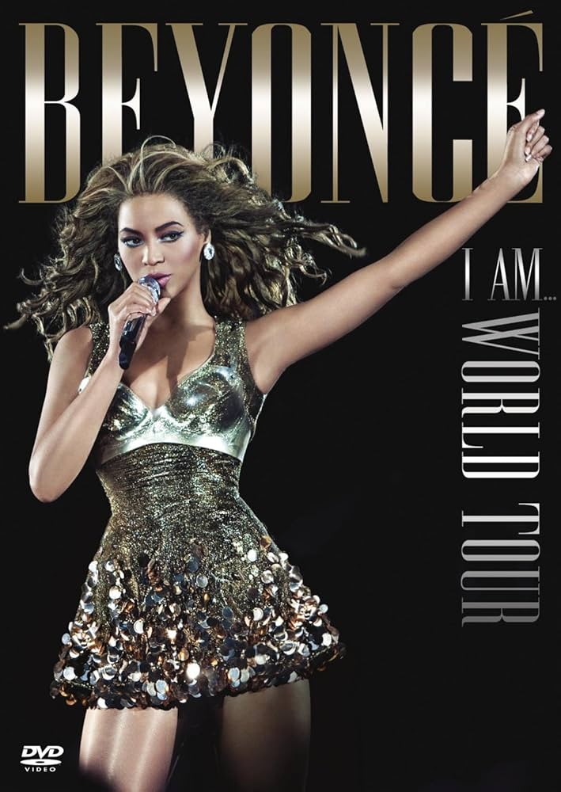

| ALBUMES |
- Lemonade
- Renaissance
- I am... Sasha fierce
- Cowboy Carter
- Beyonce
- 4
- B´Day
|

|
| PROYECTOS DESTACADOS |
- Super Bowl Halftime (2013 y 2016)
- Documental "Homecoming"
- Coachella
- The Lion King: The Gift (2019)
|


|
| CANCIONES MAS POPULARES |
- Crazy in Love
- Single Ladies
- Halo
- Formation
- Break my soul
|

|
| PREMIOS GANADOS |
PREMIOS GRAMMY
Álbum del Año por Cowboy Carter, su primer álbum de country,
convirtiéndose en la primera mujer negra
en recibir este galardón en 26 años.
Con esta victoria, se consolidó como la artista más premiada
en la historia de los Grammy.
Premios en total:35
MTV VIDEOS MUSIC AWARDS
Es la artista más premiada en la historia de estos galardones,
destacando por videos icónicos
como "Single Ladies (Put a Ring on It)" y "Formation".
Premios en total:36
BILLBOARD MUSIC AWARDS
Ha sido reconocida en categorías como Mejor Artista Femenina y Mejor Álbum,
consolidando su posición en la industria musical.
Total de premios: 28
OTROS RECONOCIMIENTOS
PREMIOS BRIT: 4
NAACP IMAGE AWARDS: 27
SOUL TRAIN MUSIC AWARDS:21
| 
|
| TOURS |
- Dangerous in lovely
- Formation Worls tour
- Renaissence World Tour
- I am... World Tour
|


|